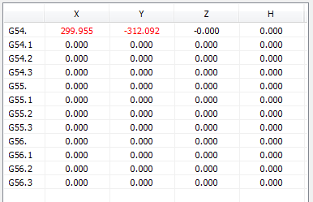

Posizioni iniziali predefinite
Durante la lavorazione, è possibile modificare la posizione iniziale degli assi XYZ e il valore H dello spessore del materiale con i comandi iso G54, G55 o G56. Per accedere a questi parametri:
- Nell’albero delle Funzioni, fare doppio clic su “Assi”;
- fare doppio clic su “Posizioni predefinite”;

Per modificare una posizione:
- fare doppio clic sulla posizione XYZH da modificare;
- eventualmente, fare clic sul pulsante
 per acquisire dal CN la posizione corrente degli assi XY;
per acquisire dal CN la posizione corrente degli assi XY;